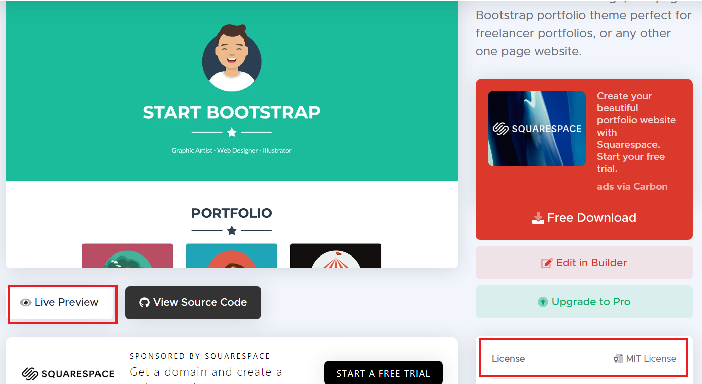
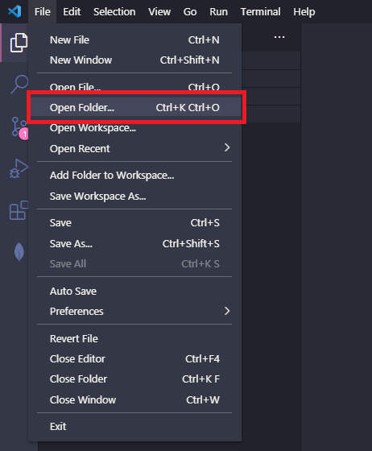
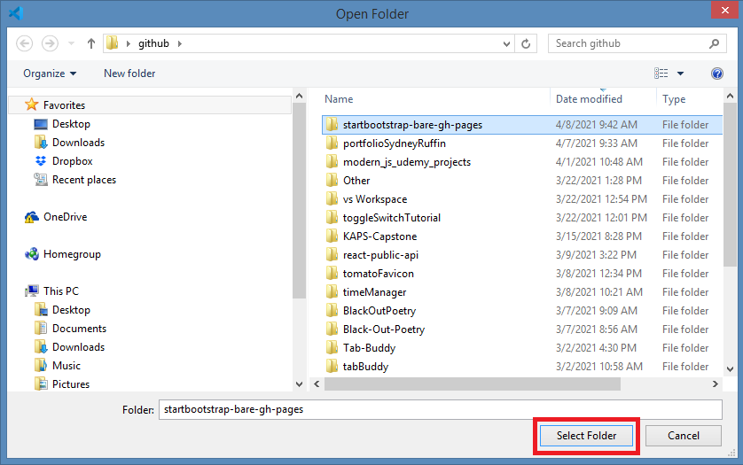
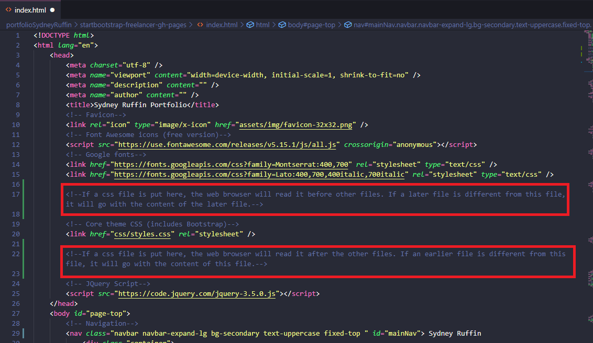

Bootstrap is a popular CSS framework for developing responsive websites. A responsive website will adjust the content of a webpage based on the size of the browser window.
Software developers have created templates using Bootstrap to make responsive website creation easy. You can also apply this framework without a premade theme easily using these instructions from Bootstrap’s Introduction page. There are numerous templates to suit any need. From a single webpage to a multipurpose website with an administration page, dashboard, and an e-commerce section you can find something to fit your needs. These templates are simple to alter to make your site unique.
The template I used to make this portfolio is called Freelancer (shown in the image above). I picked this one because I wanted a one page website. I also liked how the navigation buttons would follow the user when they scrolled through my portfolio.
Make sure to check the license. Some themes may have restrictions or ask for credit for the use of their themes.
When looking through themes, make sure to click the live preview button on the website if they have one. This is the best way to see if a theme will suit your needs.

Organize your file structure
Download the theme
In your IDE of choice (this one is called Microsoft Visual Studio) go to the file tab and click Open Folder.

Find the folder that holds your bootstrap theme and click Select Folder.

You should now see the files and folders which make up the bootstrap theme.
Organizing the html file
When you begin to edit your theme, make sure to pay attention to file and code structure. The web browser will read your files from top to bottom. The order you put things in will change how the web browser will display your code.
For example, let’s say you have two css files. One css file came from the bootstrap theme you downloaded which we will call bootstrapfile.css. The other is one you made to edit the theme which we will call styles.css.
Because you want to change the bootstrap theme there will be differences between these two files. The web browser needs to decide which one it will choose to listen to when it comes to those changes.
It will apply the last css file it reads. If you put styles.css before bootstrapfile.css, the web browser will apply the styles.css file, and then the bootstrapfile.css. This will make it so that any changes you had made will not appear.

Thank you for reading my tutorial on how to install a bootstrap theme. The code for my portfolio is available on github so you can see the code for yourself.